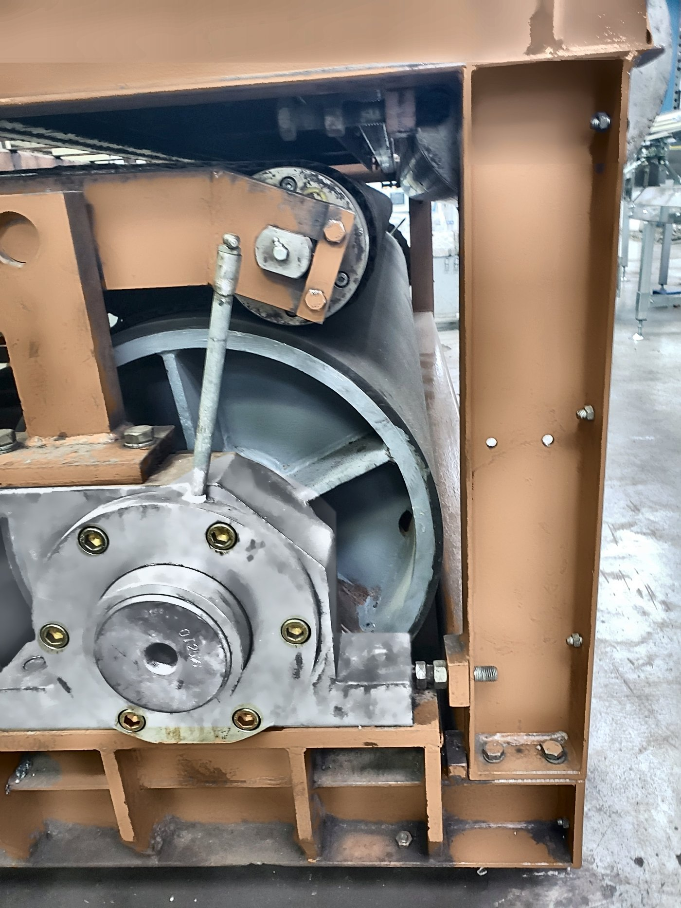
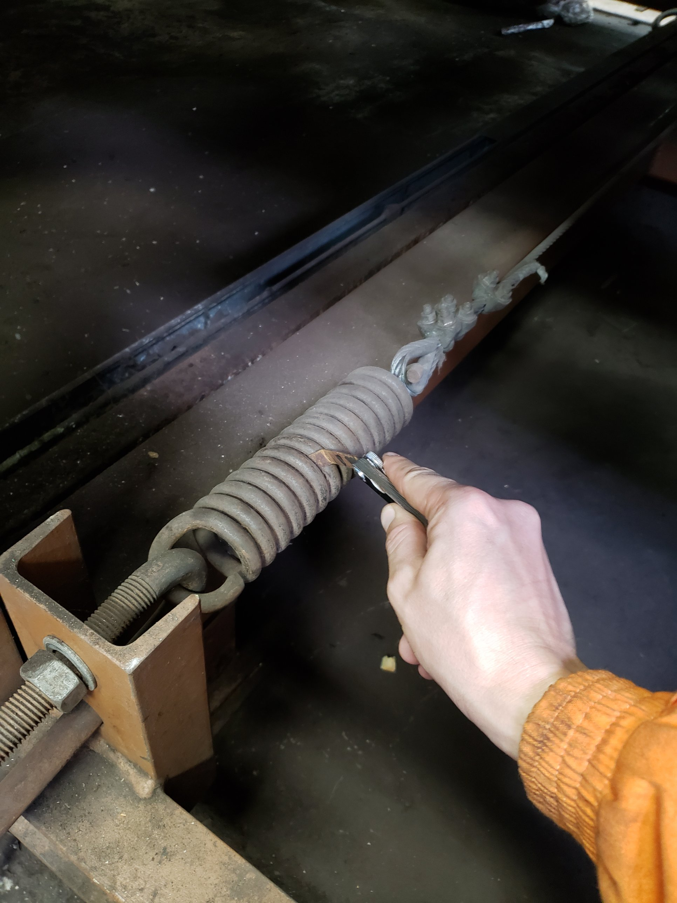
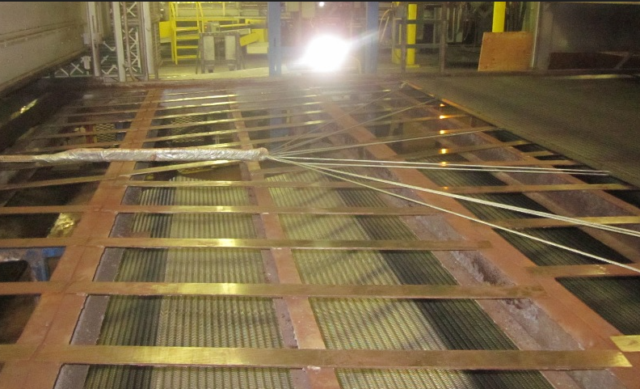

What Does an Annealing Lehr Do?
Glass containers leave the forming machine hot and with uneven internal stresses. If they cool freely, these stresses stay locked in the glass and can cause breakage later on the filling line or in the hands of the consumer. The annealing lehr is a long tunnel oven that removes these stresses in a controlled way.
- Heating zones bring the ware above the upper annealing point of the glass, where the stresses can relax.
- Controlled cooling zones lower the temperature slowly through the critical range down to the lower annealing point.
- Below that point, fast cooling is safe. The ware typically exits at around 100 °C, ready for cold-end coating.
| Zone | Typical set point | Function |
|---|---|---|
| 1 – 2 | ≈ 560 – 548 °C | Reheat and soak above the upper annealing point |
| 3 – 5 | ≈ 529 – 460 °C | Slow, controlled cooling through the annealing range |
| 6 – 7 | Depends on the article | Faster cooling below the lower annealing point |
| 8+ | ≈ 100 °C | Final cooling and exit to the cold end |
Example profile from a container-glass lehr. Real set points must be tuned to the glass composition, ware weight and production speed.
The Lehr Belt and the Drive
The ware travels through the whole tunnel on a wide wire-mesh belt. On the lehr described in this article, the belt is a spiral flat-wire link belt about 3,000 mm wide and 44 m long. The loaded strand slides over a support grate inside the tunnel, and the belt returns underneath the lehr.
The belt is driven at the delivery (cold) end by a rubber-lagged drive drum. A pressure roller above the drum increases the wrap and contact. The drive works by friction only, so everything depends on keeping enough tension between the belt and the rubber lagging.

Why Belt Tension Changes: Thermal Elongation
A lehr belt is installed cold but runs hot. As it heats up, the steel grows in length. Without a device to absorb this growth, the belt would go slack, lose traction on the drive drum and start to surge or slip.
L = belt length · α = coefficient of thermal expansion of the belt steel (typically 12 to 18 × 10⁻⁶ /°C, depending on the alloy) · ΔT = average temperature rise of the whole belt
A 44 m belt with α = 15 × 10⁻⁶ /°C and an average temperature rise of 250 °C grows by about 44,000 mm × 0.000015 × 250 ≈ 165 mm. Because the belt wraps around the weight roller in a loop, the roller only needs to drop about half of that length to take up the extra belt.
This is an illustrative estimate. The real average belt temperature depends on the lehr profile, the return strand temperature and the belt alloy.
The Weight-Roller Take-Up
The belt tension device sits in the last delivery section, just before the drive. The return strand runs over two fixed rollers and loops down around a free weight roller that moves up and down inside vertical guides. Gravity keeps the belt under constant tension. As the belt grows with heat, the roller drops. As it cools, the roller rises.
When the roller reaches the bottom of its guide, it stops working as a tensioner. The belt goes slack at the drive, loses grip on the rubber lagging and slips. A slipping belt scuffs the rubber off the drive drum very quickly, and after that the drive can no longer move the belt reliably.
The belt slips on the drive drum, and the speed through the lehr is no longer constant.
Slipping destroys the rubber lagging on the drive drum in a short time.
Irregular belt speed changes the time the ware spends in each zone, which can affect the annealing result.
Surging and stop-start movement can tip containers and cause jams at the cold-end transfer.
When the roller is too low: shorten the belt
Over time, wire-mesh belts also stretch permanently through wear at the connections. If the weight roller is getting close to its lower limit, adding weight or forcing the take-up is not the answer. The correct action is to shorten the belt by the required amount, following the manufacturer's procedure, so the roller returns to its proper working range. Defining the correct roller position for each lehr is part of the BELTPRO installation and inspection service.
Checking Spring Tension in the Field
Lehrs also use spring-loaded tensioning strands: a steel wire rope connected to a heavy tension spring, adjusted by a nut on a threaded bow. The spring is sized for the lehr length and belt width, so the goal is not maximum tension but the correct preload.
Spring preload is checked by measuring the gap between the spring coils and adjusting the nut on the threaded bow. The correct gap depends on the lehr length, the belt width and the spring design, and a wrong setting is not always visible until problems appear. BELTPRO verifies and sets the correct spring preload during installation, commissioning and periodic inspections.

Field Experience: Installing a 3 m Wide Lehr Belt
On a belt replacement for a container-glass lehr, the new belt was pulled into the tunnel over the support grate. With a belt about 3 m wide, the way it is pulled matters as much as the pulling force. A single pull point on the belt end concentrates the load on a few links, distorts the mesh and makes the belt run crooked. Instead, a pulling bar was fixed across the full width of the belt end, and several wire ropes fanned out from it to the pulling point. Each rope takes a share of the load, so the tension is spread evenly across the width and the belt advances straight and square.

Lessons from the job
- Never pull a wide belt from a single point. Use a full-width pulling bar with several ropes so every part of the belt end carries a share of the load.
- Set the take-up with the lehr cold, leaving the weight roller enough travel to drop as the belt grows with heat. The correct cold position depends on the belt length and the lehr temperature profile, and BELTPRO defines it during installation.
- Check the roller position again after the lehr reaches operating temperature, and confirm it is still within its safe working range.
- Inspect the rubber lagging on the drive drum before start-up. A worn drum will slip even with correct tension.
- Verify the spring preload by measuring the coil gap, and record the values for the next inspection.
Inspection Checklist
- Weight roller position: within its safe working range, with enough travel left for thermal expansion.
- Weight roller moves freely in its guides, with no binding or debris.
- Drive drum lagging: no glazing, cracks or bare spots.
- Tension springs: coil gap measured and within the specified preload.
- Belt tracking: centered over the full length, with no edge contact with the lehr frame.
- Belt speed: steady, with no surging at the cold-end transfer.
BELTPRO Field Support for Glass Lehrs
BELTPRO supports glass manufacturers with lehr belt installation, take-up and tension adjustment, drive troubleshooting and maintenance training. During installation and inspections, we advise on the correct weight-roller position and spring preload for your specific lehr. Contact us to plan your next belt replacement or inspection.
This article is intended for general technical guidance and preliminary engineering reference only. Lehr settings, belt tension and take-up adjustment must always follow the equipment manufacturer's documentation, the actual operating conditions and the plant's safety procedures.